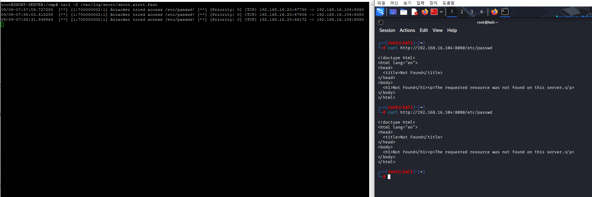

Snort는 네트워크 침입 탐지 시스템(NIDS)으로, 실시간 트래픽 분석 및 패킷 로깅 기능을 제공합니다. 이 프로젝트에서는 Snort-IDS를 구축하고, 다양한 공격 시나리오를 통해 네트워크 보안 위협을 탐지하고 대응하는 방법을 구현하였습니다.
Snort 규칙 파일을 통해 다양한 공격 패턴을 정의하고, 이를 기반으로 네트워크 트래픽을 모니터링하였습니다. 예를 들어, DDoS 공격 및 민감한 파일 접근 시도를 탐지하는 규칙을 설정하여 실시간으로 경고를 발생시켰습니다.
DDoS 공격을 시뮬레이션하여 Snort-IDS가 이를 성공적으로 탐지하고 로그를 생성하는 모습을 확인할 수 있었습니다. 이를 통해 네트워크 보안 위협에 대한 실시간 대응 능력을 향상시킬 수 있었습니다.
민감한 파일인 /etc/passwd에 대한 접근 시도를 시뮬레이션하여 Snort-IDS가 이를 탐지하고 로그를 생성하는 모습을 확인할 수 있었습니다. 이를 통해 시스템의 무단 접근 시도를 효과적으로 모니터링할 수 있었습니다.
이 프로젝트를 통해 Snort-IDS의 강력한 침입 탐지 기능을 활용하여 네트워크 보안 위협을 효과적으로 모니터링하고 대응할 수 있었습니다. Snort-IDS 구축은 조직의 보안 인프라를 강화하는 데 중요한 역할을 하였으며, 향후 보안 위협에 대응하는 데 있어 중요한 자산이 될 것입니다.
=